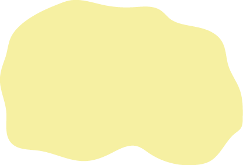

Ранні слов’яни та їх сусіди (III – V ст. н. е.)
Ареали поширення культур
Київська культура
Черняхівська культура
Культура Карпатських курганів

Вельбарська культура
Напрямок експансії племен
Гунів
Вельбарських племен
Пам'ятки культур
Поселення
Могильники